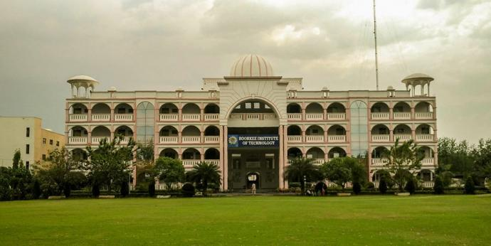

A prestigious international forum dedicated to advancing research, innovation, and collaboration in the field of artificial intelligence and intelligent technologies. The conference serves as a global hub for knowledge exchange, where experts, thought leaders, and innovators come together to present ideas, share insights, and discuss transformative technologies shaping the future of smart applications and digital ecosystems.
ICAISA-2026 is thoughtfully designed for a diverse and interdisciplinary audience, including academicians, researchers, doctoral scholars, postgraduate students, industry professionals, technology developers, startup founders, and policymakers. Whether you are presenting groundbreaking research, exploring industry-driven solutions, or aiming to stay ahead in the rapidly evolving AI landscape, this conference offers valuable opportunities for learning, networking, and global collaboration.
The conference highlights key areas such as machine learning, deep learning, computer vision, natural language processing, and advanced data analytics, along with their applications in healthcare, smart cities, intelligent transportation, cybersecurity, automation, and decision-making systems. By bridging the gap between theory and real-world implementation, ICAISA-2026 aims to foster innovation, encourage collaboration, and build sustainable, intelligent systems that enhance productivity and quality of life worldwide.

Established in 2005, Roorkee Institute of Technology (RIT), Roorkee has emerged as one of the leading private engineering institutions in Uttarakhand, known for its academic excellence and industry-oriented approach. The institute offers a well-structured curriculum aligned with global standards, ensuring that students are equipped with the knowledge and skills required to excel in their respective fields.
With state-of-the-art infrastructure and a team of highly qualified and dedicated faculty members, RIT fosters a culture of innovation, research, and ethical learning. The institute emphasizes holistic development by nurturing creativity, critical thinking, and a strong sense of social responsibility among students.
RIT Roorkee also maintains a strong focus on career development through its proactive placement cell, which collaborates with reputed organizations to provide excellent career opportunities. Its growing recognition, reflected in national rankings, highlights the institute’s commitment to shaping future leaders in engineering and technology.